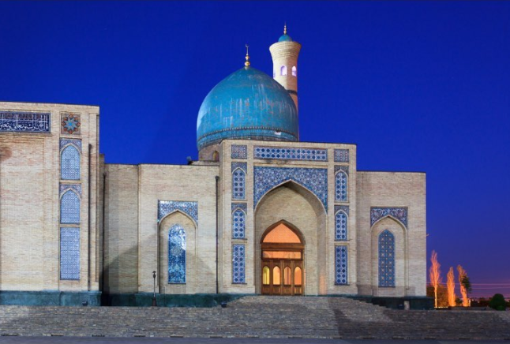
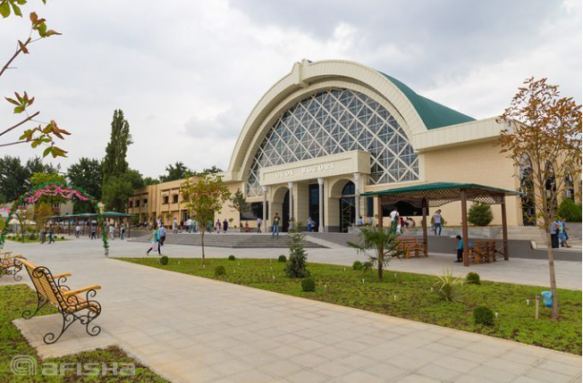

1. La place Khasti Imam.
Si vous ne savez pas quoi faire à Tachkent, rendez-vous cette fois sur la place Khasti Imam, le centre religieux de la ville. On retrouve ici des maisons en briques traditionnelles, la médersa Barak Khan avec ses magnifiques murs et ses dômes bleus, ainsi que la mosquée Tellia Cheikh, là encore un très beau monument à admirer.
2. Le Gulkam Canyon
Rendez-vous cette fois à 80 km de Tachkent. Votre voyage en Ouzbékistan sera l’occasion d’admirer un splendide paysage, Gulkam Canyon, situé sur le mont Tchimgan. De magnifiques falaises, un canyon étroit, la rivière Gulkamsay, vous voilà au cœur de la nature durant votre circuit en Ouzbékistan. Pour une randonnée, ce lieu et parfaitement indiqué, il faut compter une journée entière pour en profiter pleinement.

3. Le marché Alay
Sur la route de la Soie, prenez le temps de vous arrêter à Tachkent pour découvrir son bazar, le marché Alay. C’est l’un des plus anciens bazars de Tachkent. Des vêtements, de la soie, des bijoux, vous trouverez ici nombre d’articles liés à la culture orientale.
